werkverzeichnis
60 projekte.
Seit 2004 – vom Einfamilienhaus bis zur Projektentwicklung. Ein Klick öffnet Bilder und Eckdaten.
 aktuelle projekteWohnanlage Söhrewald · in Planung · 5 Projekte
Aktuelle Projekte, 5 Projekte
aktuelle projekteWohnanlage Söhrewald · in Planung · 5 Projekte
Aktuelle Projekte, 5 Projekte
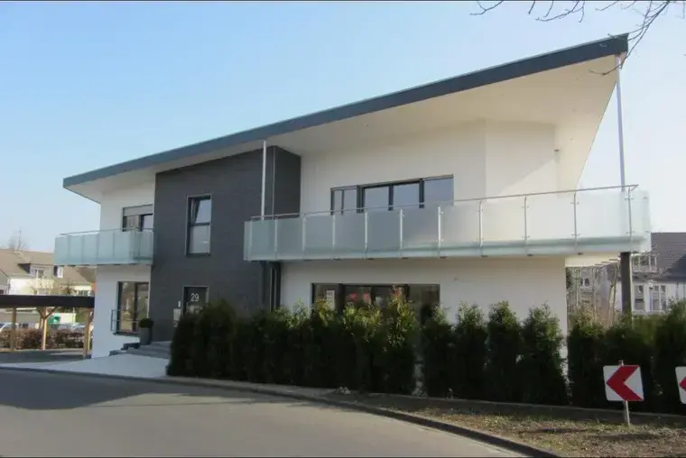
einfamilienhäuserModernes Einfamilienhaus, Kassel · 25 Projekte Einfamilienhäuser, 25 Projekte mehrfamilienhäuserZwei Mehrfamilienhäuser (30 WE), Kaufungen · 15 Projekte Mehrfamilienhäuser, 15 Projekte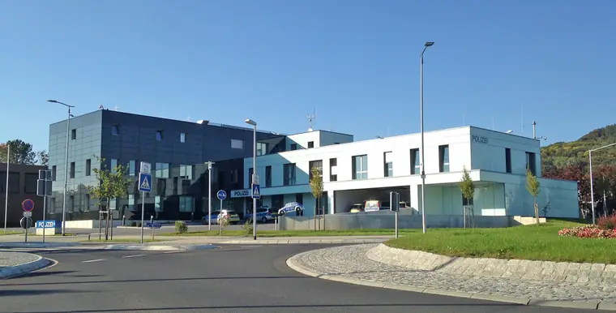
gewerbe & sonstige bauwerkePolizeirevier Süd-West, Baunatal · 10 Projekte Gewerbe & Sonstige Bauwerke, 10 Projekte projektentwicklungenWohn- und Geschäftshaus mit Kita, Kassel · 5 Projekte
Projektentwicklungen, 5 Projekte
projektentwicklungenWohn- und Geschäftshaus mit Kita, Kassel · 5 Projekte
Projektentwicklungen, 5 ProjekteAlle Projekte
| Nr. | Projekt | Ort | Jahr | Leistungen | Bauaufgabe | Bild |
|---|---|---|---|---|---|---|
| 001 | Wohnanlage Söhrewald mit 27 WE, Kindertagesstätte und einer Tagespflege | Söhrewald | geplant 2027 | LPH 1–9 | Aktuelle Projekte | 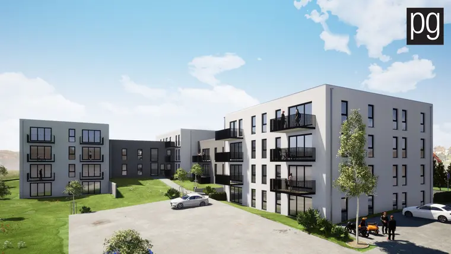 |
| 002 | Neubau eines Wohnhauses mit 25 WE | Kassel | geplant 2026 | LPH 1–5 | Aktuelle Projekte | 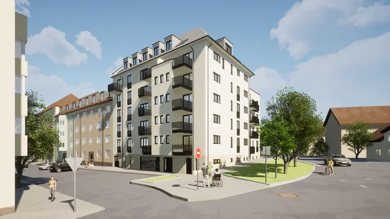 |
| 003 | Neubau des Deutschen Luft- und Raumfahrtzentrums (DLR) | Göttingen | 2024 | LPH 5 | Aktuelle Projekte | 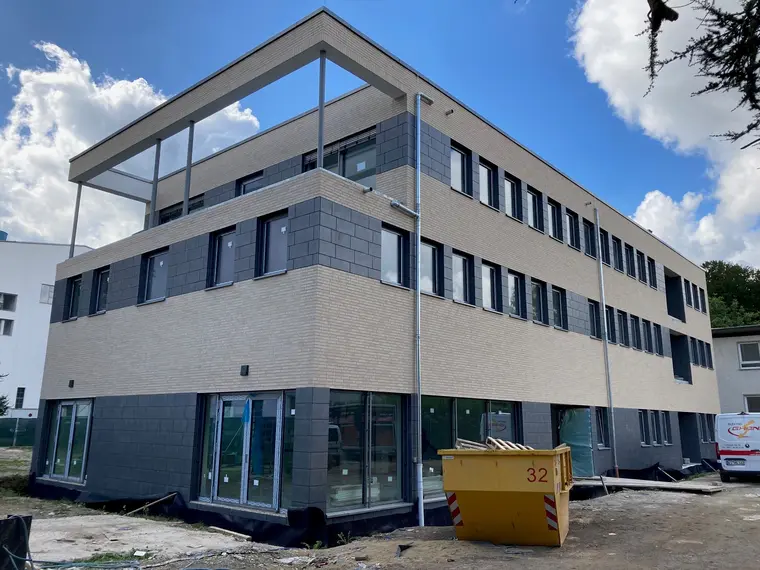 |
| 004 | Gestaltung eines Patientenzimmers | Bad Zwesten | 2024 | Design · Planung · Ausführung | Aktuelle Projekte | 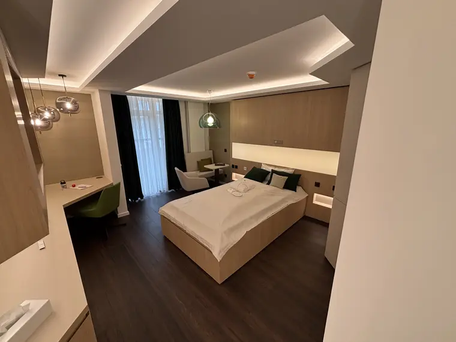 |
| 005 | Erweiterung zum Zweifamilienhaus mit Gewerbeeinheit | Habichtswald | 2025 | LPH 1–9 | Aktuelle Projekte |  |
| 006 | Neubau eines Einfamilienhauses mit Carport | Kraftsolms | 2018 | LPH 1–4 | Einfamilienhäuser | 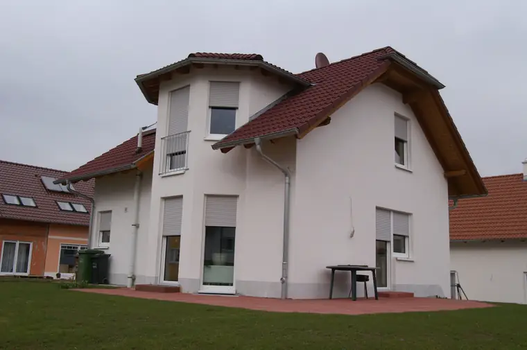 |
| 007 | Neubau eines Einfamilienhauses | Kassel | 2004 | LPH 1–9 | Einfamilienhäuser | 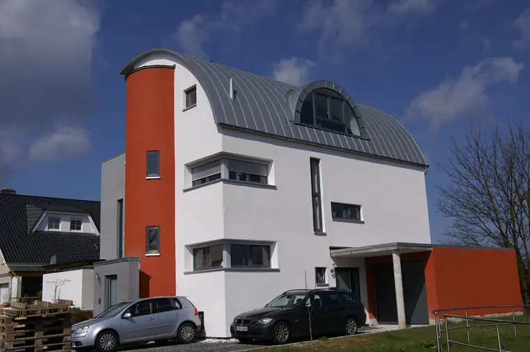 |
| 008 | Neubau eines Einfamilienhauses mit Garage | Ihringshausen | 2019 | LPH 1–8 | Einfamilienhäuser | 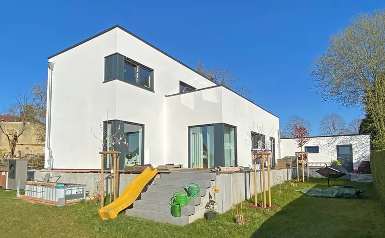 |
| 009 | Neubau eines Einfamilienhauses | München | 2015 | LPH 1–4 | Einfamilienhäuser | |
| 010 | Aufstockung und Erweiterung EFH | Vellmar | 2007 | LPH 1–8 | Einfamilienhäuser | 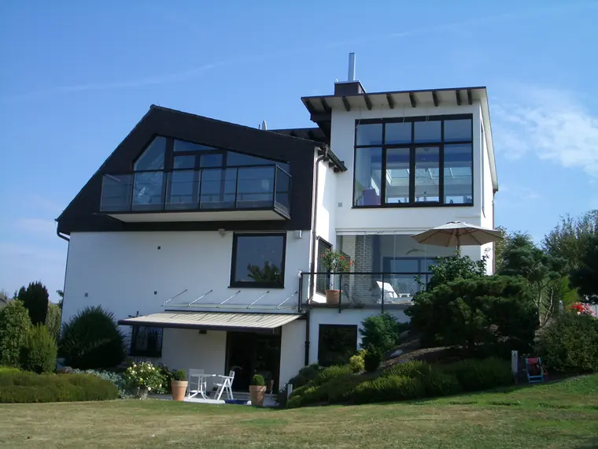 |
| 011 | Erweiterung eines Einfamilienhauses | Kassel | 2018 | LPH 1–8 | Einfamilienhäuser | 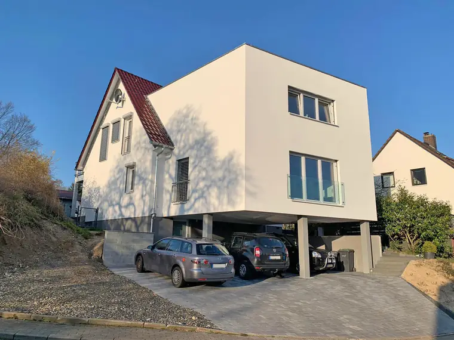 |
| 012 | Neubau eines Einfamilienhauses | Kassel | 2018 | LPH 1–8 | Einfamilienhäuser | 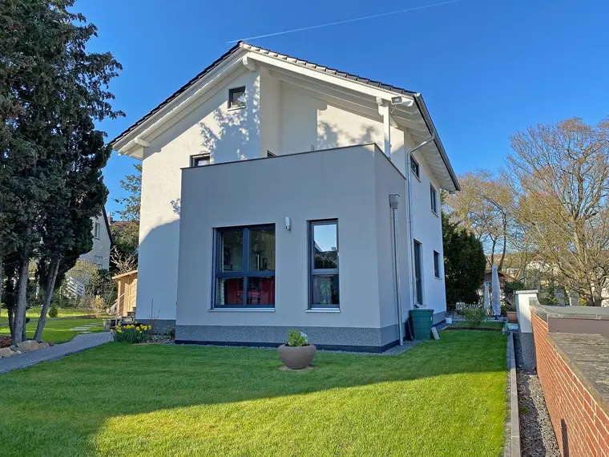 |
| 013 | Erweiterung und Sanierung EFH | Mannheim | 2012 | LPH 3 | Einfamilienhäuser | 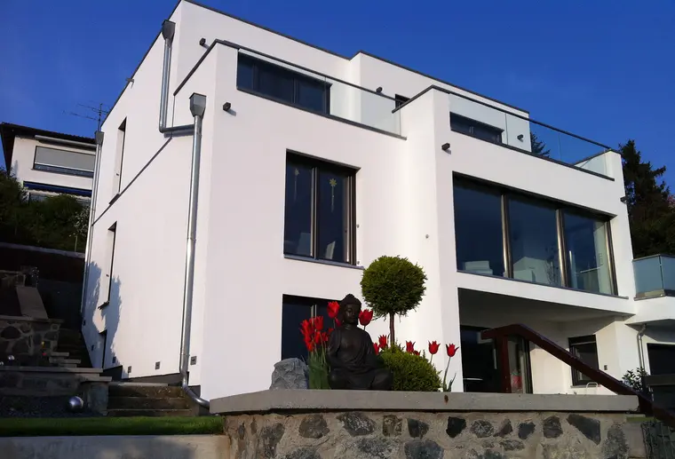 |
| 014 | Neubau eines Einfamilienhauses mit Garage | Fuldatal | 2019 | LPH 1–8 | Einfamilienhäuser | 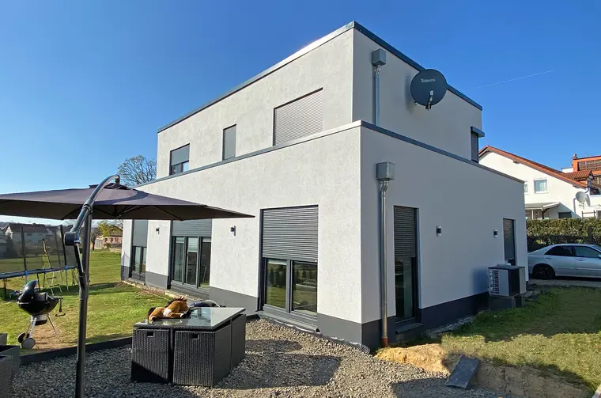 |
| 015 | Neubau EFH | Nieste | 2007 | LPH 1–8 | Einfamilienhäuser | 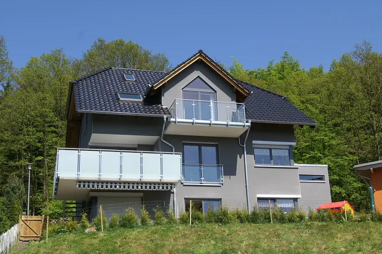 |
| 016 | Neubau eines modernen Einfamilienhauses | Kassel | 2005 | LPH 1–8 | Einfamilienhäuser | |
| 017 | Umbau und Erweiterung EFH | Kassel | 2008 | LPH 1–8 | Einfamilienhäuser | 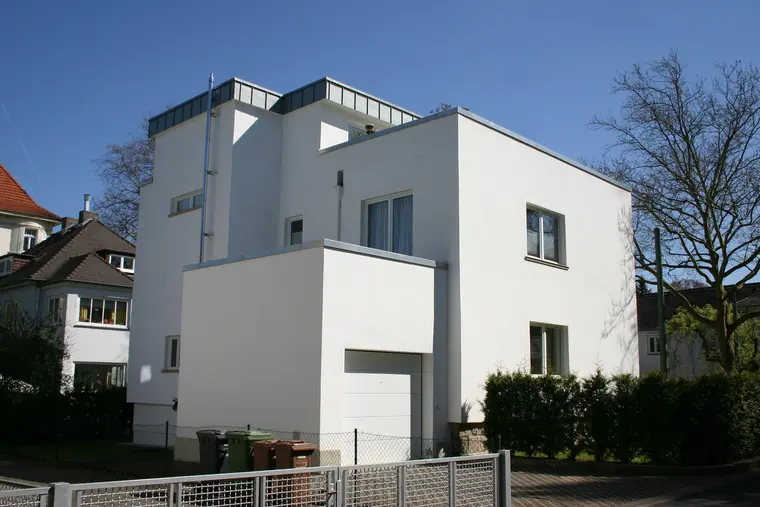 |
| 018 | Neubau eines Einfamilienhauses mit Garage | Wincheringen | 2016 | LPH 1–5 | Einfamilienhäuser | 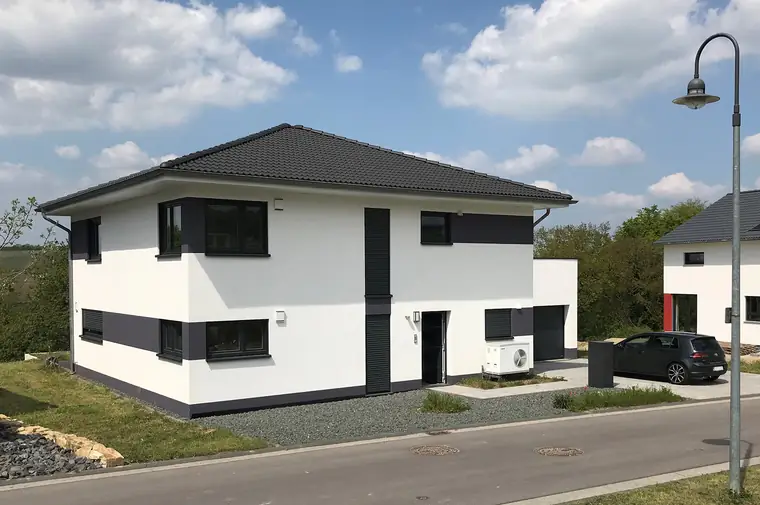 |
| 019 | Sanierung und Aufstockung eines Einfamilienhauses | Kassel | 2020 | LPH 1–9 | Einfamilienhäuser | 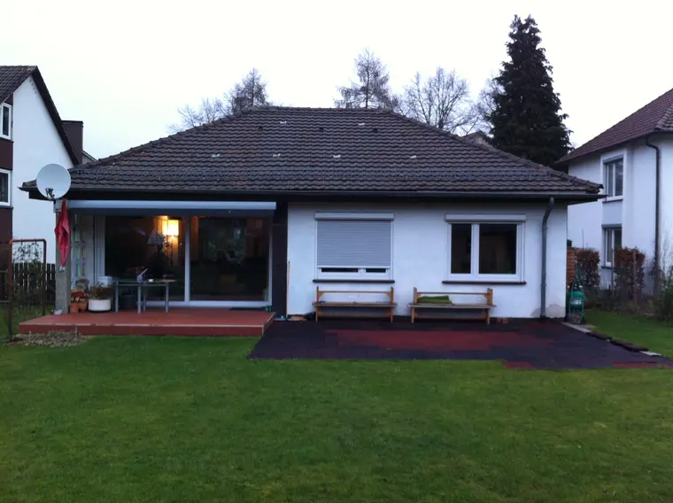 |
| 020 | Neubau einer Stadtvilla | Kassel | 2009 | LPH 1–8 | Einfamilienhäuser | 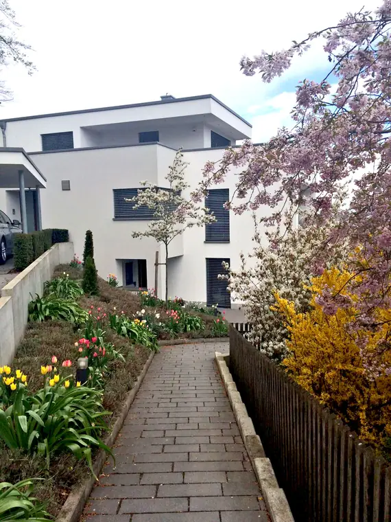 |
| 021 | Neubau eines Einfamilienhauses mit Carport | Eckelshausen | 2017 | LPH 1–4 | Einfamilienhäuser | 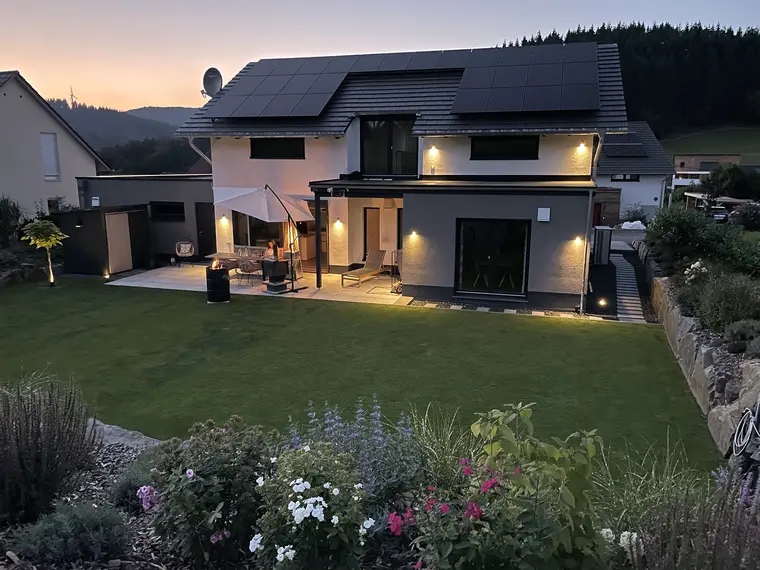 |
| 022 | Bau eines Pultdachhauses in Holzständerbauweise | Südhessen | 2016 | LPH 1–4 | Einfamilienhäuser | 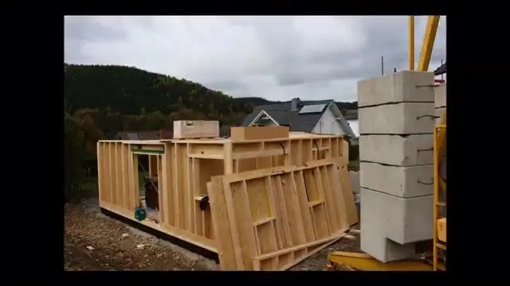 |
| 023 | Bau eines Satteldachhauses in Holzständerbauweise | Südhessen | 2015 | LPH 1–4 | Einfamilienhäuser | 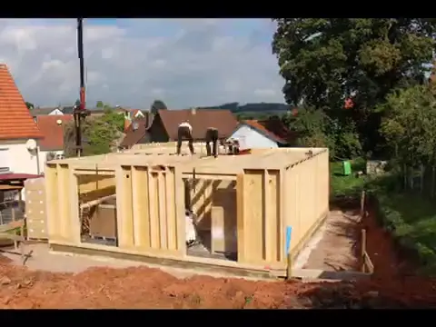 |
| 024 | Erweiterung und Sanierung EFH | Kassel | 2010 | LPH 1–9 | Einfamilienhäuser | 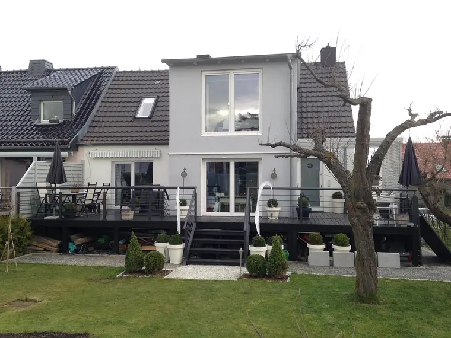 |
| 025 | Neubau eines Einfamilienhauses | Kassel | 2006 | LPH 1–8 | Einfamilienhäuser | |
| 026 | Neubau eines Einfamilienhauses mit Garage | Kassel | 2011 | LPH 1–9 | Einfamilienhäuser | 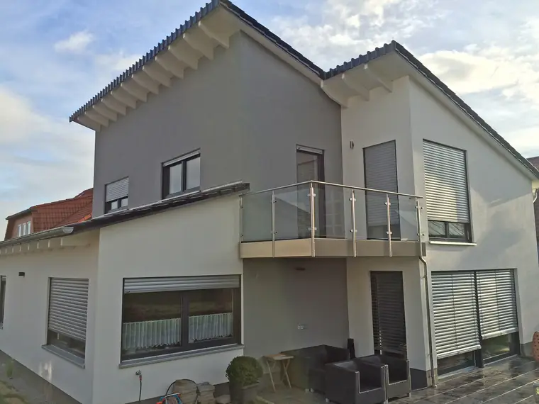 |
| 027 | Neubau eines Einfamilienhauses | Kassel | 2005 | LPH 1–4 | Einfamilienhäuser | 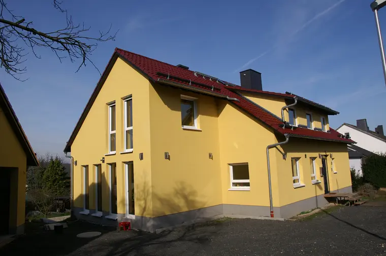 |
| 028 | Neubau eines 2-Familienhauses mit Garage | Kaufungen | 2010 | LPH 1–5 | Einfamilienhäuser | 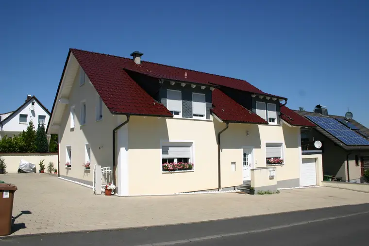 |
| 029 | Anbau und Erweiterung eines Einfamilienhauses | Schauenburg | 2008 | LPH 1–9 | Einfamilienhäuser | 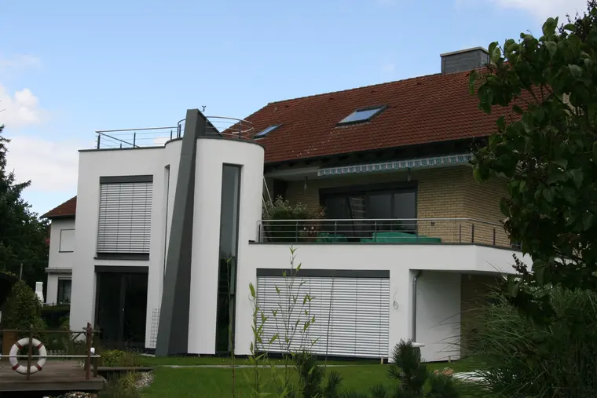 |
| 030 | Neubau eines Doppelhauses | Kassel | 2007 | LPH 1–9 | Einfamilienhäuser | 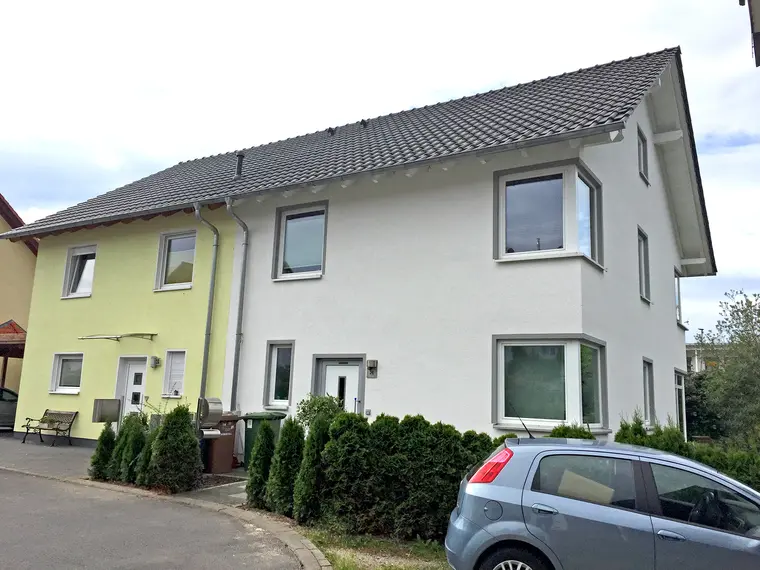 |
| 031 | Umbau und Sanierung einer ehemaligen Kaserne zu einer Wohnanlage (51 WE) | Kassel | 2011 | Projektentwicklung / LPH 1–9 | Mehrfamilienhäuser | 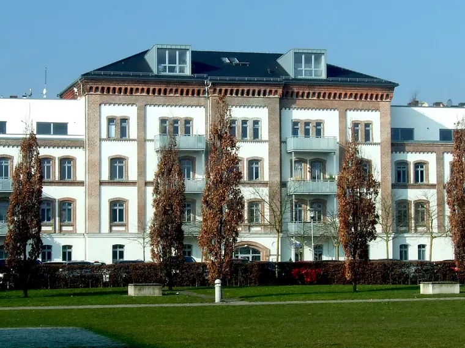 |
| 032 | Neubau von zwei Mehrfamilienhäusern (30 WE) | Kaufungen | 2021 | LPH 1–9 | Mehrfamilienhäuser | |
| 033 | Aufstockung eines Mehrfamilienhauses um 6 Geschosse | Kassel | 2009 | LPH 1–9 | Mehrfamilienhäuser | 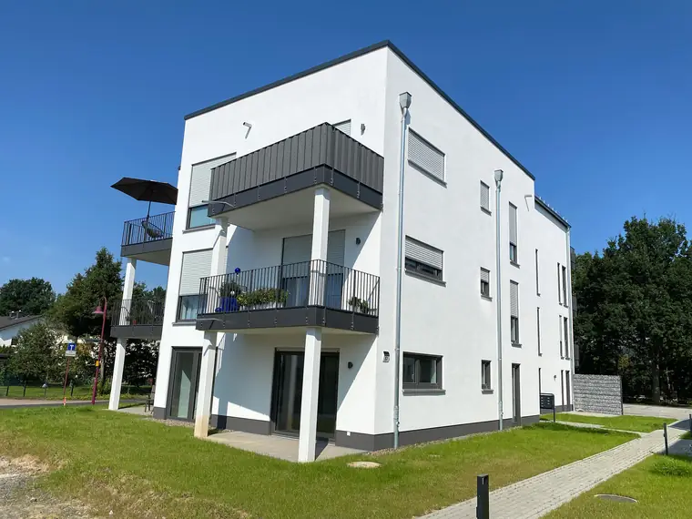 |
| 034 | Neubau eines 5-Familienhauses | Kassel | 2019 | LPH 1–5 | Mehrfamilienhäuser | 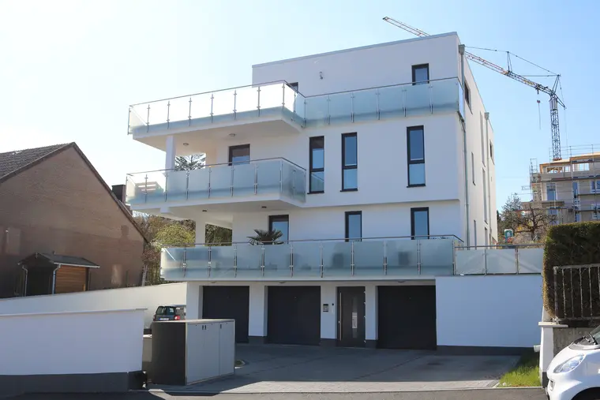 |
| 035 | Neubau eines 10-Familienhauses | Lohfelden | 2011 | LPH 1–9 | Mehrfamilienhäuser | 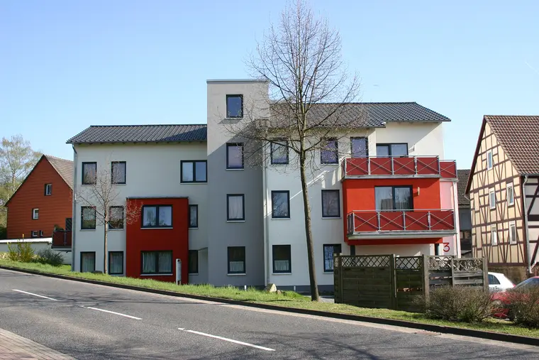 |
| 036 | Neubau von zwei Mehrfamilienhäusern mit Tiefgarage (16 WE) | Kassel | 2020 | LPH 1–5 | Mehrfamilienhäuser | 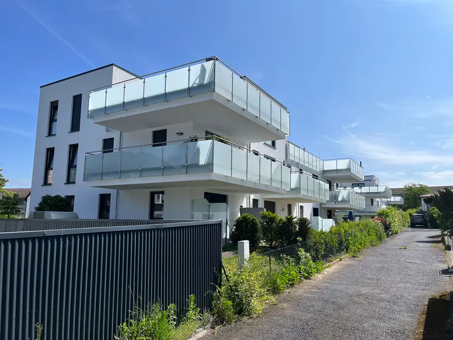 |
| 037 | Neubau eines 4-Familienhauses | Heiligenrode | 2017 | LPH 1–8 | Mehrfamilienhäuser | 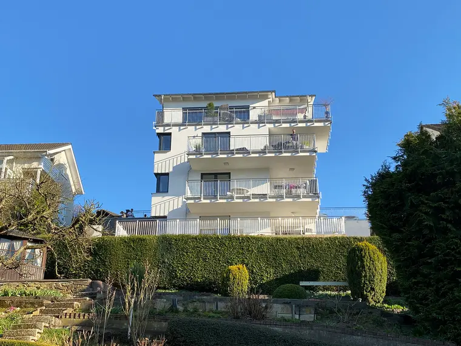 |
| 038 | Anbau eines Mehrfamilienhauses | Kassel | 2004 | LPH 1–8 | Mehrfamilienhäuser | 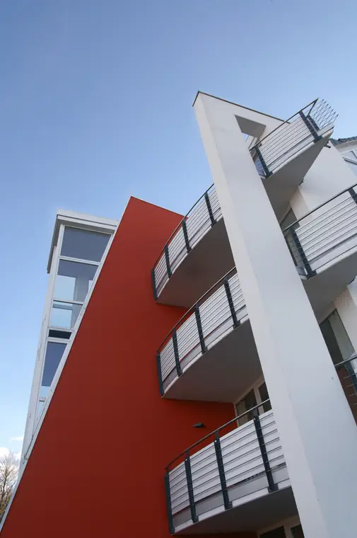 |
| 039 | Sanierung einer Wohnanlage mit 120 Wohneinheiten | Hamm | 2009 | LPH 1–9 | Mehrfamilienhäuser | 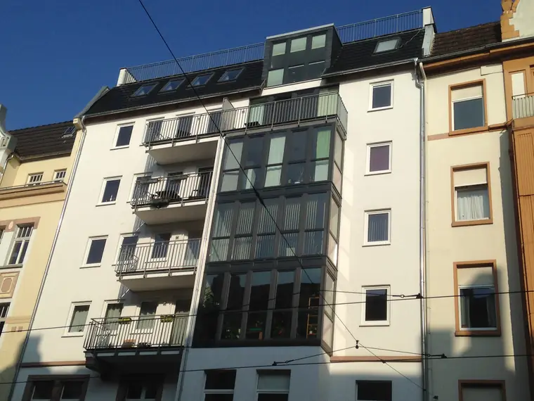 |
| 040 | Neubau eines Wohnhauses mit 5 WE | Vellmar | 2023 | LPH 1–8 | Mehrfamilienhäuser | 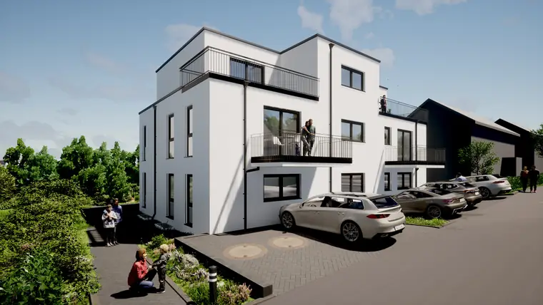 |
| 041 | Neubau eines Wohnhauses mit 6 WE | Kassel | 2021 | LPH 1–4 | Mehrfamilienhäuser | 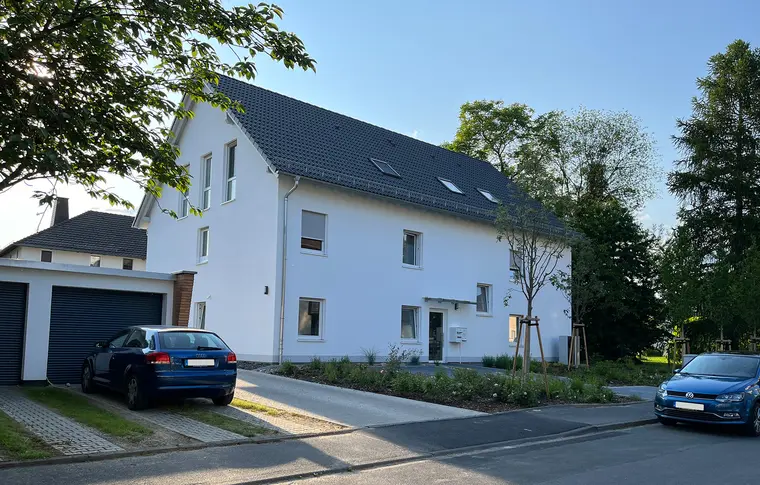 |
| 042 | Sanierung eines Mehrfamilienhauses | Kassel | 2005 | LPH 1–9 | Mehrfamilienhäuser | 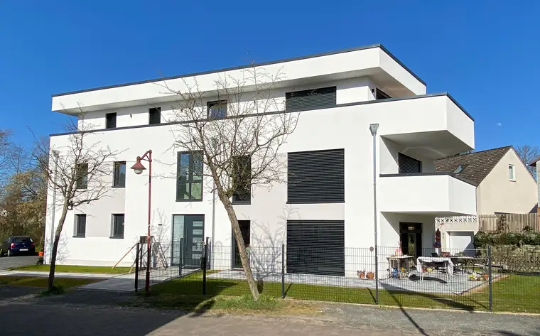 |
| 043 | Neubau eines 3-Familienhauses | Vellmar | 2019 | LPH 1–5 | Mehrfamilienhäuser | |
| 044 | Neubau eines 4-Familienhauses mit Büroeinheit | Butzbach | 2015 | LPH 1–8 | Mehrfamilienhäuser | 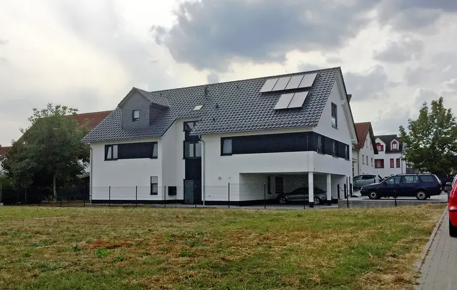 |
| 045 | Anbau und Erweiterung eines Wohnhauses mit 3 WE und Büroeinheit | Ehlen | 2025 | LPH 1–9 | Mehrfamilienhäuser | 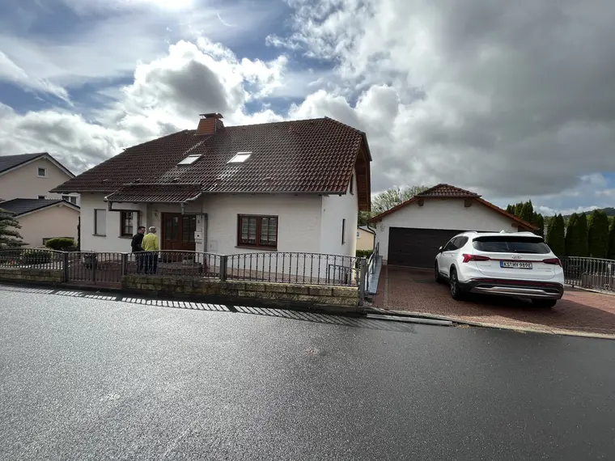 |
| 046 | Ehemaliges Fabrikgelände | Stuttgart & Umgebung | 2011 | LPH 1–4 | Gewerbe & Sonstige Bauwerke | 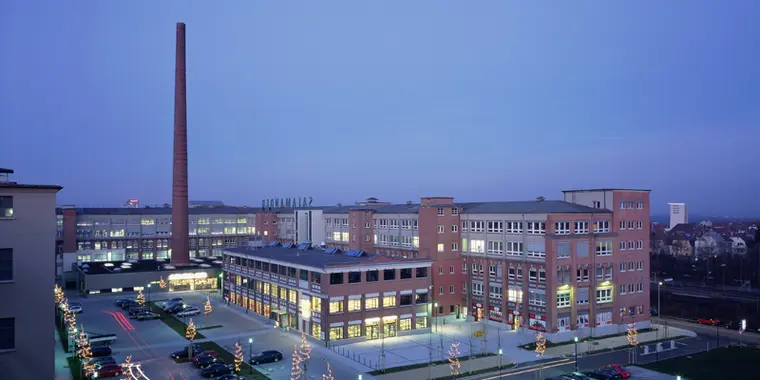 |
| 047 | Neubau Polizeirevier Süd-West (Baunatal) | Baunatal | 2015 | LPH 5 | Gewerbe & Sonstige Bauwerke | |
| 048 | Nutzungsänderung eines Theaterfundus | Kassel | 2004 | LPH 1–4 | Gewerbe & Sonstige Bauwerke | 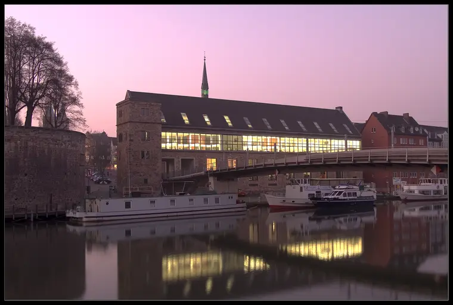 |
| 049 | Neubau von Gewerbehallen mit Verkaufsfläche | Kassel | 2006 | LPH 1–5 | Gewerbe & Sonstige Bauwerke | 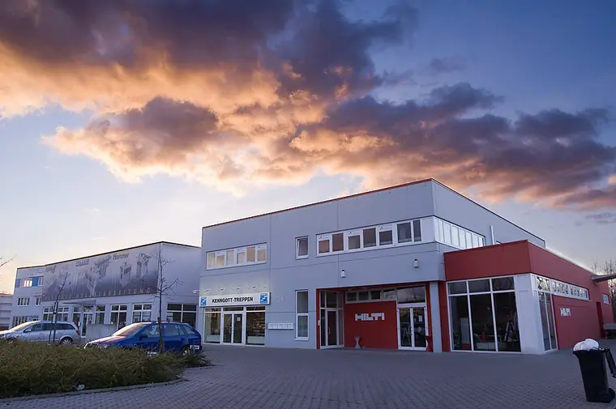 |
| 050 | Teilsanierung eines Hochhauses | Kassel | 2016 | Projektsteuerung | Gewerbe & Sonstige Bauwerke | 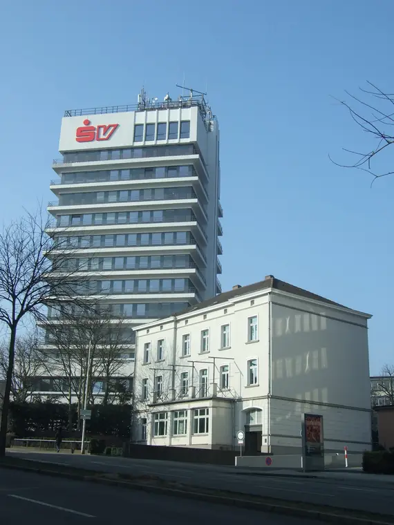 |
| 051 | Neubau einer Gewerbehalle | Calden | 2016 | LPH 1–9 | Gewerbe & Sonstige Bauwerke | 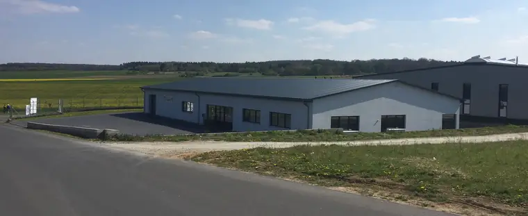 |
| 052 | Nutzungsänderung Sporthalle zu einem Fitnessstudio | Baunatal | 2022 | LPH 3–5 | Gewerbe & Sonstige Bauwerke | 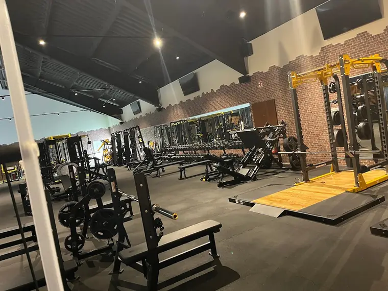 |
| 053 | Sanierung eines Wohn- und Geschäftshauses | Fulda | 2016 | LPH 5–8 | Gewerbe & Sonstige Bauwerke | 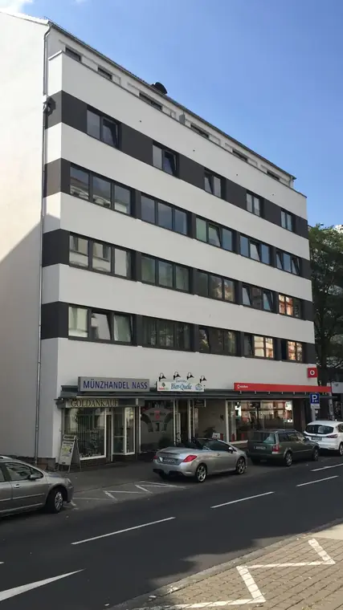 |
| 054 | Erweiterung eines Bürogebäudes | Kassel | 2013 | LPH 1–8 | Gewerbe & Sonstige Bauwerke | 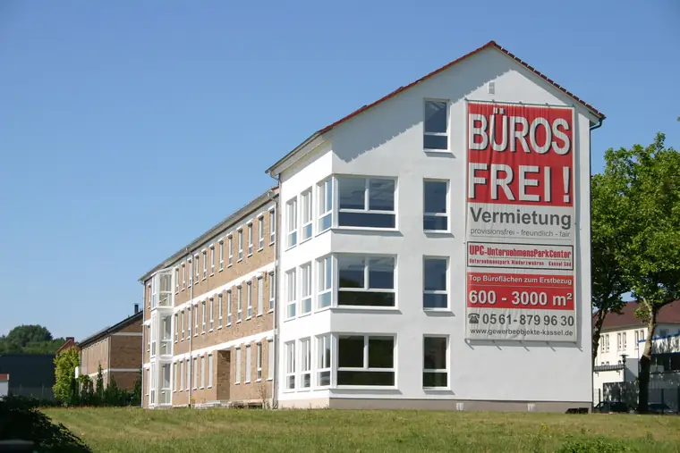 |
| 055 | Nutzungsänderung zu einem Fitnesscenter | Kassel | 2015 | LPH 3–5 | Gewerbe & Sonstige Bauwerke | 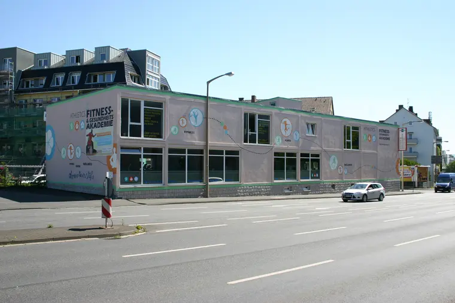 |
| 056 | Neubau von drei Einfamilienhäusern | Niedenstein | geplant 2026 | Projektentwicklung und Umsetzung | Projektentwicklungen | |
| 057 | Neubau eines Wohn- u. Geschäftshauses mit Kindertagesstätte | Kassel | – | Projektentwicklungen | ||
| 058 | Entwicklung von zwei Doppelhaushälften | Kassel | geplant 2026 | Projektentwicklung | Projektentwicklungen | |
| 059 | Entwicklung einer Wohnanlage mit Shopping-Mall | Österreich | Projektentwicklung | Projektentwicklungen | ||
| 060 | Entwicklung eines Wohnkomplexes | Butzbach | 2014 | Projektentwicklung | Projektentwicklungen |